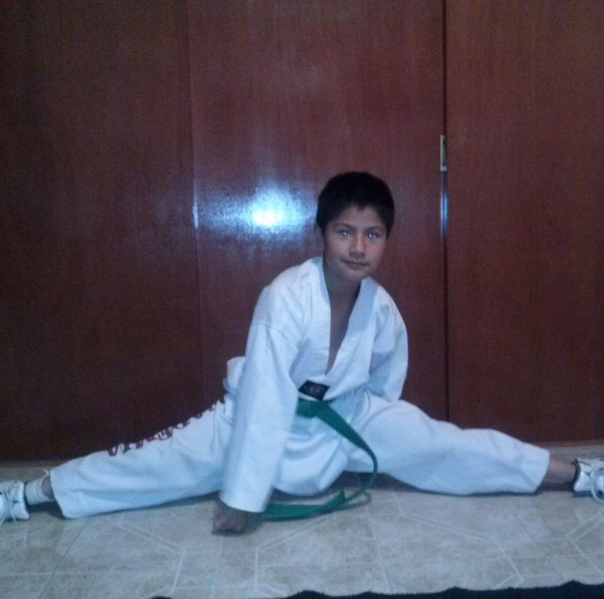
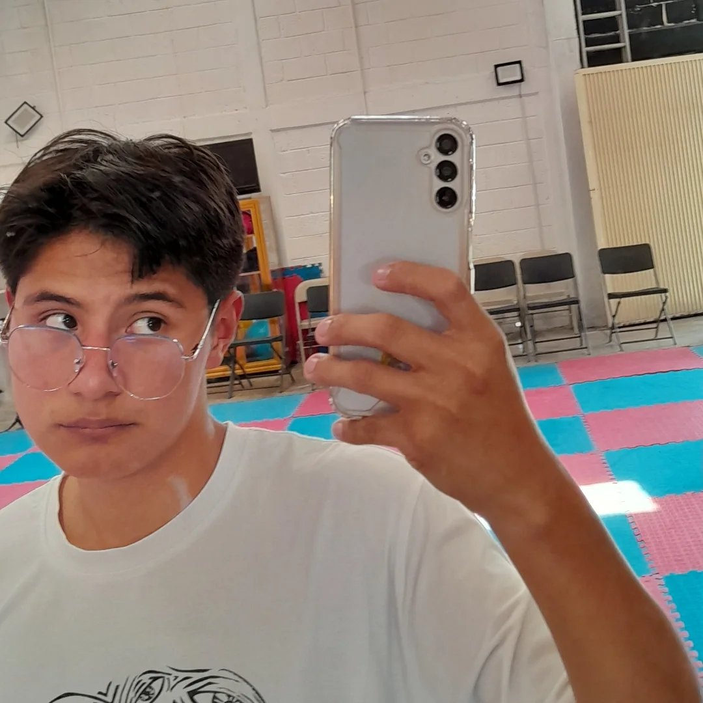

Siempre he pensado que las autobiografías son las mejores formas para ver el punto de vista de la vida de una persona, no por contar su vida sino por el enfoque y cosas que cuenten de su vida, yo considero tener una vida normal, pero las opiniones son diferentes, cada cabecita es un mundo,y sin hacerlos leer mas, aquí esta mi biografía, tal vez entiendan o juzguen mas mi persona desde este día, pero sera interesante sin duda alguna.
Toda esta magnifica, divertida, triste y curiosa historia comenzo un dos de octubre del 2003 a las 00:00 (desde ahí tuve que saber que iba a ser un niño especial), a los pocos dias fui dado de alta y me llevaron a mi casa, me bautizaron a los 3 meses y de ahí se quedo para siempre el fantastico nombre de Daniel Díaz Rojas. Son pocas las cosa que recuerdo de esa primera etapa, entrar a la primaria a los 5 años por que cumplo años en octubre, y a los 8 años mi papa aplico la de ir por cigarros, de ahí fue naciendo mi depresión y todos los temas con la ansiedad, como ultimo dato, en la primaria y sus concursos de matemáticas descubrí que amo las ciencias y todo lo que sea exacto.
Aquí vamos a hablar sobre la etapa más funable, horrible y curiosa de todas, la adolescencia es una etapa que desearía simplemente haberme saltado, no por como pasaron las cosas, sino por lo más que yo hice las cosas, todo el tema de la secundaria fue horrible, no hubo un solo dia que no fuera una pesadilla por compañeros molestos o profesores mediocres, fueron probablemente los peores 3 años de mi vida, pero al menos conocí a los que creí que serían mis amigos para toda la vida, Liam y Abril.
En la preparatoria viví varias relaciones que, sin duda, marcaron mi vida de formas diferentes. Mi relación más larga fue con Melissa, casi tres años de altibajos, con más infidelidades de mi parte que una relación sana. Eventualmente, nuestra relación llegó a su fin. Después, vino Daiana, una relación superficial donde no me comprometí realmente; fue solo diversión en ese entonces. Pero la que más me afectó fue Yosvelyn, mi primer amor, la primera persona que me rompió el corazón y la que me enseñó el verdadero dolor de la despedida. A pesar de que hablamos de vez en cuando, el trato siempre ha sido distante.
Ya en la universidad, mi relación más significativa fue con Sandra, con quien estuve desde el 10 de febrero del 2022 hasta el 26 de septiembre del 2024, cuando tomé la decisión de terminar nuestra relación. Después de eso, en noviembre de 2024, comencé a relacionarme con Alheli. Sin embargo, para principios de 2025, ya no estoy en ninguna relación ni tengo planes amorosos. Mi enfoque ahora está completamente en mi desarrollo profesional y personal. Como ingeniero en sistemas especializado en programación web, IA y análisis de datos, estoy trabajando en consolidar mi carrera y seguir creciendo en cada aspecto de mi vida tratando de encontrar mi paz y lograr ser feliz. Como ultima meta es lograr tener una familia, con la mujer indicada, espero de verdad que no tarde mucho más.

Actualización 28/02/2025
Actualmente estoy Saliendo con Carolina, es una chica muy linda, atenta, guapa, inteligente,
alta, interesante, estudia para chef y es super wow la conexión que tenemos, es como si nos
conocieramos de antes, estoy fascinado de salir con ella, me encanta, espero que todo vaya a mejor,
me gusta mucho y segun mis planes, finalizando marzo o iniciando abril deberíamos ya de ser novios
formalmente. Mi vida de manera general va muy bien, me gusta la vida desde la fluoxetina, me ayudo
a darme cuenta que estaba dejando ir mi vida por cosas que no valian la pena, y como se trató este
párrafo, pude conocer y darme la oportunidad de salir con Cari, la adoro demasiado como no tienen idea,
ella y mis demás planes personales estan siendo un gran apoyo para todo el caos de la vida.